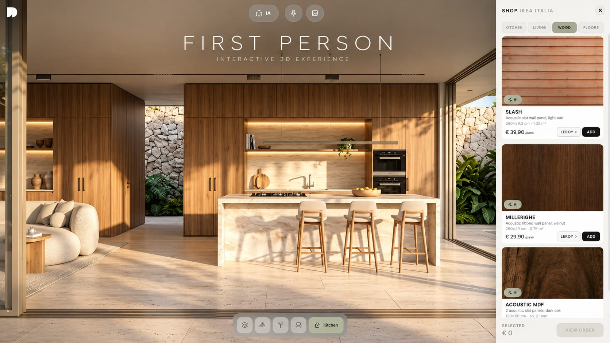

Unreal Engine · Cinematics
Showreel 2026
Unreal Engine cinematics only: light, material and camera treated with the discipline of offline rendering, rendered in real time.
Unreal Engine · Cinematics
Unreal Engine cinematics only: light, material and camera treated with the discipline of offline rendering, rendered in real time.
Unreal Engine · Real-time configurator
Real-time yacht configurator: change the hull, deck and sail colours, jump between bow, cockpit and stern, set the time of day and play the yacht film.
Unreal Engine · Real-time configurator
Build the scene your way: drop furniture, art and lights into any interior or exterior, then swap every finish in real time.
Unreal Engine · C++ · Real-time configurator
Real-time car configurator: orbit the car, open every door, sit inside and swap paint and upholstery live.
3ds Max · Python · AI rendering
My 3ds Max tool for high-precision AI renders: it scans every vertex in the scene, turns the geometry into exact measurements for the prompt, then enhances it into a photoreal, high-resolution image without leaving the viewport.

Unreal Engine 5 · Real-time environment
Complete UE5 environment: beach house scene with high-fidelity lighting, precise materials and a cinematic-ready setup.
Download soon
Web · 3D e-shop · AR · AI Studio
Web e-shop for archviz: explore the exterior scene by scene, pick sofas, chairs, plants and flooring with 3D and AR previews, switch between day and night, and generate images and videos of the view with the built-in AI Studio.
Open the live experience ↗
Web · First-person 3D showroom · AI
First-person 3D showroom of a tropical residence: walk from the aerial view to the pool, garden, living room and kitchen, pick wall panels, floors and furniture in the built-in shop, and generate images with AI – right in the browser.
Open the live experience ↗
Python · Unreal Engine
Python tool for Unreal Engine archviz pipelines: validates scenes, catches common errors and enforces production-ready standards before rendering.
Get it on Gumroad ↗Need a tool or a real-time scene for your pipeline?
Get in touch →© 2026 Juscelio Schmidt · All projects · escrevaparajd@gmail.com